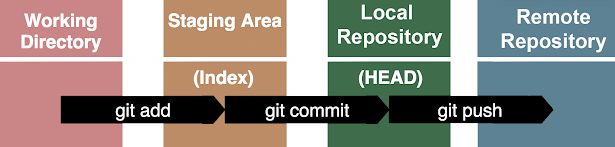

GitHub

After a commit, go to GitHub and create a repo.
Follow the GitHub provided prompts.
Push your existing local repo from your computer terminal.
- git remote add
- command 2
- command 3
- git remote add origin https://github.com/githubusername/githubrepo.git
- Add a remote repository (GitHub) to your local repository. The web address is where you can find the repository on GitHub.
- git branch -M main
- Set the name of the branch to main. The -M is for move/rename.
- git push -u origin main
- Pushes your local main branch to the remote repository named origin.